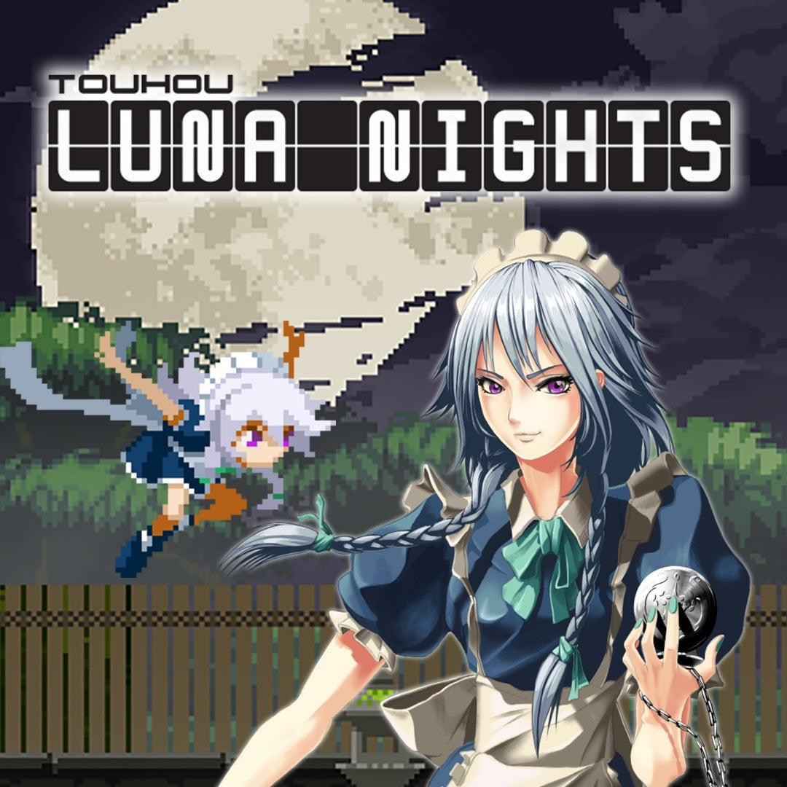

-
Touhou Luna Nights

-
Bloodstained
-
Metroid: Zero Mission
-
Hollow Knight
-
Castlevania Symphony Of The Night
É um fangame de Touhou, que você controla Sakuya Izayoi e ela possui a habilidade de poder parar o tempo e atacar os outros enquanto o tempo está parado, que é a principal mecanica desse jogo que traz bastante diversão. É um metroidvania bem linear porém bastante curto que você consegue zerar em cerca de 2-3 horas. Como estamos falando de touhou aqui as músicas são ótimas.
Gameplay do primeiro boss:
Feito por Koji Igarashi o diretor de Castlevania Symphony Of The Night, é um metroidvania incrivel que possui varios tipos de armas para usar que contém poderes especiais para cada categoria, 3 tipos de glyphos em que você pega os poderes dos inimigos e um jogo cheio de conteúdo. Infelizmente meu PC faleceu ai perdi meu save de 10 horas então não pude avançar mais no jogo.
Gameplay da primeira aréa:
É um remake de gameboy advanced do primeiro Castlevania de nintendinho que traz o nome metroid do gênero metroidvania, em que samus pode atirar, tacar mísseis e se tornar uma bola para avançar em caminhos pequenos.
Gameplay:

É um jogo com uma ambientação desolada incrivel que passa um ar de misterio e sentimentos que não consigo descrever, com uma bela soundtrack, arte incrivel e otimo combate.
Gameplay de uma parte da primeira aréa do jogo:
O jogo que dá a parte vania do nome metroidvania. Possui uma arte de pixels incrivel, com uma soundtrack que inclue musíca classica, metal, techno e gothic rock. Você controla Alucard filho de Dracula que vai ao castelo para evitar a ressurreição dele, em que você enfrenta varios tipos de monstros e lendas. O jogo só possui um problema no balanço da dificuldade que no final você fica muito poderoso eliminando facilmente inimigos e uma dublagem inglesa bem tosca porém cômica por ser um jogo com uma atmosfera tão obscura.
Gameplay: